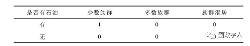
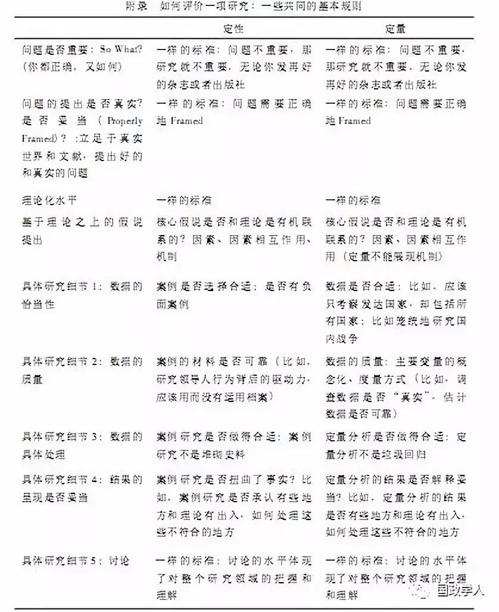

收录于合集

简 介
【 作者 】
唐世平 ，复旦大学特聘教授，复旦大学国际关系与公共事务学院陈树渠讲席教授。他的最新著作《国际政治的社会演化》(牛津大学出版社，2013年)于2015年获得国际研究协会(ISA)年度最佳图书奖。
【 编辑 】谢晋
【 来源 】
《公共行政评论》2015年04期，第45-62+183-184页 核心观点
【摘 要】 在政治学方法论发展的进程中，（KKV，1994）是一部地位独特的著作，由其出版所引发的方法论大辩论，特别是其中“定量与定性之争”，带动了整个政治学界对方法论的深入理解及方法创新。这篇文章围绕上述“定量与定性之争”问题，阐述了作者对方法论的理解。具体而言，文章重点批评了一些学者（包括KKV在内）错误地认为：“寻求因果解释”的最重要途径，就是用定量方法甄别“原因的影响”。对文章作者而言，这是一个对研究方法相当狭隘的理解，但也没有任何捷径可以超越两者之争，只有懂得多种技巧并理解它们各自的长处和短处，才能够在面对实际的研究问题时，灵活运用不同的方法组合，比较好地解决研究问题。
【关键词】 社会科学；方法论；因果关系；定量研究；定性研究；数理语言
正 文
一、引言及几点声明
毫无疑问，在政治学的方法论发展进程中，（KKV，1994）是一部有特别地位的作品。但是，这本书的特别地位不是因为它都对，而恰恰可能主要是因为它的核心立场是如此极端的错误，以至于许多学者，包括许多杰出的计量统计学者，起来群起而攻之从而引爆了后来的方法论辩论（特别是：Brady & Collier，2004/2010）。而这一轮由（KKV，1994）带动的方法论大辩论，特别是其中的“定量与定性之争”，确实带动了整个政治学界对方法论的理解的深入，以及方法论的创新（Mahoney，2010）。
在展开之前，需要做几点说明。
首先，鉴于“定量与定性之争”的内容纷杂，我在此不罗列，更不评论，这场争论中的任何细节。这一方面是因为我只能在其他地方才可能仔细讨论这其中的某些关键细节，而另一方面是因为我的立场一直是“（我们需要）超越定性与定量之争”。但是，我必须强调一点，“定量与定性之争”最最核心的问题在于“寻找因果解释”到底是试图寻找“Causes of Effects（结果的原因）”，还是仅仅是试图甄别“Effects of Causes（原因的影响）”上。定量研究的优势在于通过甄别“Effects of Causes（原因的影响）”，从而确立某些因素对于某一类社会结果有影响（或者贡献）与否。而定性研究的优势在于试图获得对某一类社会结果的我们直觉意义上的“因果解释”，比如，为什么“大革命会发生在某些国家”？或者“为什么某些革命成功了，而某些革命失败了”？显然，我们绝大部分人士都会同意这样的立场：我们通常所说的“因果解释”是后一种意义上的“因果解释”，即“Causes of Effects（结果的原因）”。而尽管确立某些因素对于某一类社会结果是否有影响（或者贡献）是重要的，但是这么做只是寻求“因果解释”的一部分。而许多偏好定量技术的学者则错误地认为，“寻求因果解释”和甄别“Effects of Causes（原因的影响）”完全等同（Goertz & Mahoney，2012：Chap.3；也见下面对KKV的具体批评）。由此，这些人士也错误地强调，“寻求因果解释”的最重要方法就是用定量方法进行“因果推断（Causal Inference）”，或者说是甄别“Effects of Causes（原因的影响）”。
其次，我对任何一类方法并没有特别的偏爱。这是因为任何一类方法都有它的长处和短处，而没有全能的方法。因此，我认为，只有懂得多种技巧，并且理解他们各自的长处和短处，我们才能够在面对实际的研究问题时，灵活运用不同的方法组合并比较好地解决问题。
再者，社会科学中的方法其实远远不止定性和定量两种。按照我的分类，社会科学中的方法至少有六个大类的方法（更早一点的讨论，见：Abbott，2001，2004）。但是，我确实同意：定性分析、QCA（Qualitative Comparative Analysis）①、定量分析是最重要的数据分析方法。
最后，尽管我对方法论的理解仍是一个“学习进行时”，我自己独立以及和我的合作者一起运用过的方法基本覆盖了社会科学中的所有方法大类，包括：ABM（Agent- based Modeling，代理人基建模）、GIS（Geographic Information System，地理信息系统）、SNA（Social Network Analysis，社会网络分析）、QCA（Qualitative Comparative Analysis，定性比较分析）②、定性分析、定量分析、概念分析（Conceptual Analysis）③、Formal Modeling（包括博弈论、经济学模型）以及ISM（Interpretative Structural Modeling，解释结构模型）。事实上，我和我的团队还在试图为解决社会科学中的某些具体的研究问题而发展一些新的方法。但是，我不是一个“唯数学化而数学化”的人：我始终认为，我们发展任何新的方法都是为了解决具体的研究问题，而不是为了让东西好看或不让人看懂。
在这篇文章里，我将主要阐述我对方法论的理解，而不做太多的解释，许多文献也将不详细列出。更加详细的讨论只能在其他的地方才能展开。
二、对KKV的简短评价
前面提到，（KKV，1994）对定量和定性两类方法的立场是非常极端的，也是错误的。具体地说，（KKV，1994：3）认为：
我们的看法是：定量、定性的区别，顶多在研究风格与特定技术上。至于背后双方分析问题的逻辑，其实没任何不同。这类逻辑虽然在定量研究中，一般会被解释得非常清楚，有时还用符号来帮助表述。但在做得好的定性研究里头，绝对也能到类似的推理逻辑。所以，不论定量或定性，如果能在研究设计的过程中，更加注重上面说的推理逻辑，研究肯定都能做得更出色。
从这一点来看，（KKV，1994）应该说是一部非常不幸的作品。这其中的最核心原因有三。
首先，这三位作者尽管都是学界大佬，但他们对方法论的理解都是不够完整的。具体地说，加里·金（Gary King）几乎不懂定性分析，而他对定量技术的偏爱又让他不能批判性地看待定量技术的缺陷。而罗伯特·基欧汉（Robert Keohane）和悉尼·维巴（Sidney Verba）则不仅基本不懂定量，而且也不太懂定性分析（至少按现在的标准看）。如此一来，（KKV，1994）一书对方法论的理解有严重的偏差也就不难理解了。
其次，（KKV，1994）没有提及任何对定量方法的许多当时就有的深刻批评，而是一味强调定量方法的优势。④我这里要特别强调，这些批评定量方法的人士都是对定量和定性有非常好的理解的人士。我这里仅列出两位：安德烈·阿伯特（Andrew Abbott）和大卫·弗里德曼（David A.Freedman）。
安得烈·阿伯特对定量方法有重要的贡献：定量方法中的两个重要方法“序列分析（Sequence Analysis）”和“最优匹配（Optimal Matching）”都是他首先发展出来的（而“序列分析”背后的原理，是生物学中DNA序列测定的思维和逻辑!）。但是，阿伯特非常清楚定量方法的缺陷。在他（Abbott，1988）发表在“社会学理论（Sociological Theory）”杂志上的“超越广义线性模型（Transcending General Linear Model）”一文中，阿伯特指出了，作为定量分析所主要依据的“广义线性模型”，有赖几个根本性假设的成立：（1）实体均展现属性（Entities with Attributes）；（2）单调的因果影响（Monotonic Causal Flow；（3）单一的变量意义（Univocal Meaning of Variables）；（4）不存在序列影响（Absence of Sequence Effects）；（5）独立等因果假说（Causal Independence and Related Assumptions）；（6）超越于时空背景[Independence Context（In Their Space and Time）]。但在现实社会中，上述每一点均不无疑问，因此，阿伯特进一步认为，正是这些广义线性模型的根本性假设的缺陷，使得社会科学家不能够更好地理解世界。
弗里德曼就更是职业的统计学家（他曾经当选过美国统计学学会的主席）。1991年，弗里德曼发表了一篇广受赞誉的文章Statistical Models and Shoe Leather（收录在：Freedman，2010）。在这篇文章中，他指出，在许多的场合，一味地试图用不同的统计技巧去甄别观察数据中的因果关系（而这基本上是加里·金的立场）是不可能完成的任务。要想从观察数据中甄别出相对确定的因果关系，需要各种各样的逻辑思维（包括定性思维），而统计技巧只是其中的一种工具而已。
我还可以列出（KKV，1994）中存在的许多更加具体的问题。这里，我只列出五个。（1）（KKV，1994：第六章）一味强调增加观察样本。但是，许多社会科学的最重要的问题本就是一个小样本的问题。因此，这些问题的观察样本不可能被增加，也不应该被增加。比如，要讨论现代化在西欧的起源，就不可能去增加样本：在1500—1700年间，有可能成为世界上第一个现代化国家的西欧国家只有四个（叶成城、唐世平，2015）。这背后的根本性原因是我们面对的不是实验数据，而是有限的观察数据。（2）（KKV，1994：85-87）对机制的理解可以说是荒谬的。（3）和许多定量人士一样，（KKV，1994：87-89）对用交叉项（Interactive）来捕捉因素之间的相互作用的局限性没有足够的认识，因而根本就没有认识到QCA技术的价值（Ragin，2000）。（4）KKV几乎完全忽略了数据的测量问题（见下面的讨论）。（5）最后，也是最为致命的是，尽管（KKV，1994：75-85）在定义“Causality（因果关系）”时多处引用了（Holland，1986），但却忽视了（Holland，1986：954）非常强调的一点，即，“给出因果解释（Formulating a Causal Explanation）”和【KKV最关心的】“因果推断（Causal Inference）”是不同的。前者要远比后者复杂，尽管后者通常是前者不可忽缺的一部分（也见：Goertz & Mahoney，2012：chap.3）。⑤
为此，我特别建议，所有的青年学子都应该把（KKV，1994）和对其的批评的集成，即亨利·布拉迪（Henry E.Brady）和大卫·科利尔（David Collier）合编的Rethinking Social Inquiry（Brady & Collier，2004/2010）一起看。事实上，我鼓励大家先看看（Brady & Collier，2004/2010），这样才不会被（KKV，1994）过多地误导。而我再次强调，我批判（KKV，1994）不是为了批评定量分析方法。事实上，我和我的同事的许多研究都在运用定量分析方法。但是，我们不认为定量分析是唯一可行和可靠的因果分析方法；而我们也总是基于问题和数据来选择方法，而不是倒过来。
三、超越定性与定量之争：评价一项研究的共同标准
我认为，任何一项实证研究，无论其使用的方法如何（即，无论是定性与定量还是它们的组合以及其他的方法），我们对它的水平的评价应该有基本统一的评价标准。我认为，以下几条标准是最重要的（见表1）。
（一）问题是不是真实的？问题是否重要？问题的提出是否妥当？
评价一项研究的价值，首先是它的问题的水平。这一项至少包含以下三个方面。
首先，研究问题必须是一个真实的问题，而不是一个假的问题。比如，“上帝为什么先造就男人，然后再造就女人”就不是一个真实的问题，而是一个虚假的问题。无论自然科学还是社会科学都是实证科学。因此，我们只研究来自于真实世界的真实问题。
其次，这个研究问题是否重要？如果一项研究用了非常高妙的技巧，但是却在研究一个非常无聊或者渺小的问题，那这项研究就不太重要。⑥
最后是问题的提出的方式是否妥当。
（二）对问题的解释的理论化的水平
接下来则是理论化的水平。无论一项研究使用的方法是定性、定量还是其他，其理论化的水平都应该是评价它的第二重要的标尺。
在这里，需要特别强调的是：“提出实证假说（Formulating Empirical Hypothesis）”不是“理论化（Theorization）”。而现在，许多定量和定性研究其实几乎没有理论化，只有罗列了几个实证假说而已。这一不幸结果背后的主要原因是将“提出实证假说”和“理论化”等同起来的错误理解。
简单地说，除非你面对的是一个极其简单的问题（比如，为何人在饿的时候就想吃东西？），“提出实证假说”并不构成“理论化”。也就是说，提出几个可以验证的实证假说——无论是定量的还是非定量的——都不是“理论化”本身：至少，这样的做法的“理论化”程度是非常不够，甚至是非常低的。
在（绝）大部分时候，理论需要解释可能出现的“实证结果（Empirical Outcomes）”。因此，理论应该支撑实证假说，或者说是，假说应该从理论推导而来。而没有理论支撑的假说只是对数据有可能展现出的相关性的猜测而已。不幸的是，现在的许多定量研究，它们的所谓理论部分只是罗列了一些（定量的）假说，然后就是（垃圾）回归结果。它们所给出的回归结果不容易理解，是否稳健也非常难以确立。我想，大家对这样的低俗实证研究的态度多半是“嗯，哈哈”。⑦
这背后还有一个关键原因。理论的一个核心作用就是约束实证假说的提出：从理论推导出来的假说不能随意修改。而不受理论约束的实证假说其实很容易和实证结果相互“事后自圆其说”。也就是说，对具体的实证结果（无论是定量的还是定性的）的事后（Ex Post）解释不是“理论化”，至少不是好的“理论化”：因为要“事后自圆其说”实在太容易了。
只有这样，我们才能理解为什么如果从一个理论推导出的多个实证假说得不到实证支持的时候，我们就要对这个理论本身持更加谨慎甚至怀疑的态度。因为一个好的理论必须做到逻辑自洽，并且整合了多个因素和机制。
学界有一种说法是“Ideas are Cheap（想法不值钱）”。事实上，好的思想永远是稀缺的。现在的问题是大家都走向了低水平的理论化。这不可避免地导致许多实证研究的低俗化。
因此，最好是先发展出一个好的理论，然后再从这个理论推出（好的）实证假说，即有理论支撑具体的（实证）假说。只有这样作出来的实证结果才有趣，才相对可靠⑧。相反，如果一项定量实证研究没有好的理论，不仅我们难以判断它给出的统计结果是否可靠，我们甚至都不知道需要度量什么样的东西，怎么度量，更谈不上给出特定的统计模型。特别强调，同样的标准适用于定性研究。
以对内战特别是族群冲突的研究为例。一些非常有影响的早期工作（如：Collier & Hoeffler，1998，2004；Fearon & Laitin，2003）几乎没有理论，或至少是像样的理论。因此，毫不奇怪，他们的许多结果都备受质疑甚至被推翻。相反，我们对族群冲突的研究则一直是以理论为向导（Tang，2011，2015）。因此，我们给出的实证假说是清晰的，因而实证假说是否得到支持也是清晰的（参见：Tang & Li，2015；熊易寒、唐世平，2015）。
归根结底，没有理论贡献的定量研究只是（更加复杂的）相关性描述而已，它和一个描述性的定性研究相比，并不一定好到哪去，或至少是好得有限。
（三）实证假说是不是基于理论之上？
有了第二点要求，我们就很容易理解第三个要求：实证假说需要建立在好的理论之上。
具体说来，定量分析（以及QCA）的实证假说必须包含以下两个部分：因素（含时空）、因素之间的相互作用。因为绝大部分社会结构都是多个因素相互作用造就的，独立的变量变得相对没有太多的意义（当然，某些变量本身就是几个变量的“交互项”）。如果可能的话，定量的假说还应该包括“因果路径（Causal Pathways）”，因为定量研究的某些方法可以帮助我们甄别不同的“因果路径”[比如，是Mediating（传导），还是Moderating（调节），还是两者都有]。定量方法和QCA均无法真正验证机制，因而可以不要求它们的实证假说提出机制。
定性研究的实证假说则必须有以下三个部分：因素（含时空）、因素相互作用以及机制。因为只有定性研究可以解决机制问题（而这也是定性研究的核心优势之一），因此定性研究的假说应该尽可能包含机制。
定量方法和QCA的优势在于甄别因素以及因素组合，从而帮助我们判定不同的“因果路径”哪一个更有可能是正确的。但是，定量方法和QCA都无法验证机制。相比之下，定性方法的独特优势在于可以解决机制问题，尽管它也可以帮助我们甄别因素以及因素组合。因此，越来越多的好的研究是定性、定量以及其他方法的结合。
（四）数据的可靠性：概念化、度量操作、整体数据质量
任何研究的结论的可靠性都至少部分取决于它使用的数据的可靠性：再复杂的方法也无法从根本意义上解决数据质量的问题，而数据质量的问题不仅仅是缺失值的问题。大体说来，数据的可靠性主要由三个方面决定：概念化、具体的度量操作以及整体的数据质量。
比如，巴巴拉·格迪斯（Barbara Geddes）（Geddes，2003）对威权政体的分类有概念性的分类错误，所以是不能直接用的⑨。
其次，某些东西可能无法通过问卷度量，或者用问卷度量得到的结果是高度偏差的。比如，你要调查中国公民对日本作为一个国家的态度，问卷调查的数据恐怕都是不可靠的，无论你是面对面调查还是电话，还是互联网。比较可靠的度量可能是：某一个地区的日系汽车销售量、保有量；以及这个地区去日本旅游的绝对人数和相对比例。而在做回归的时候，至少需要控制以下变量：是否遭遇过抗战的战火；是否遭到过日本残酷的“三光”政策；日本占领时间；是否有日系汽车合资企业、人均GDP、离海岸线的距离等等。
再者，不是所有的数据集都可以拿来直接运用，因为这些数据集本身有非常严重的问题。比如，World Governance Index（WGI）就是一个有大问题的数据集。类似有大问题的数据集还包括著名的“世界价值观调查（World Value Survey，WVS）”。
最后，某些数据集则包含了太多的不相干的观察（Irrelevant Observations or Cases）。直接运用这样的数据获得的统计结果通常会高估某一些因素的显著性。因此，这样的数据集也不可以拿来直接运用，而是需要对样本进行细致的截取和挑选。这方面，帕特里克·麦克唐纳（Patrick J. McDonald）最近对“民主和平论”的统计证据的攻击值得大家好好学习（McDonald，2015：19-26）。
（五）最后才是具体的方法使用
如果是定量研究，这些方面包括具体的数据处理方式、具体的回归工具是否妥当、回归模型是否正确、具体的回归技巧、结果的稳健性、回归结果的Interpretation（理解）、是否排除了竞争性解释等。
如果是定性研究，这些方面包括具体的案例选择、是否包含了负面案例、具体的历史证据的考证、具体的实证证据的使用、“过程追踪”是否妥当、是否排除了竞争性解释、对结果的理解等。
四、定量分析的一些基本原则
许多定量方法论的人士已经讨论了一些基本的原则（比如：Ray，2003；Achen，2005），告诫我们在从事定量研究时不要犯一些根本性的错误。以下的讨论中，有引用的地方表明我发展了既有的一些讨论，或者只是强调。而没有引用的观点则基本上是我认为目前的许多定量研究方法讨论还没有注意到或者强调不够的地方。
（一）首先也是最重要的，无论使用何种方法，一个研究者都必须对他想研究的问题有确实的了解。
比如，对国内战争的延续，特别是族群政治的延续的许多研究都是那些对战争没有一些基本的理解的所谓的“冲突专家”做的。而因为度量的便利，这些研究，通常只有“结构”因素，而没有人的因素。这些人士恐怕基本不知道支撑一场战争有多难，也没有几个真正读过克劳塞维茨、孙子兵法以及毛泽东的著作。又比如，最近很时髦（而且几乎都发表在顶尖杂志）的“基因社会科学”，其实都是一堆不懂得从基因到人的行为有多么长的距离而完全“让数据说话”造就的垃圾，最后都会成为学术界的笑话。
（二）基于对研究问题的深入了解以及对文献的良好把握，发展出一个好的理论。这个问题我在其他地方已经详细讨论过，此处不再赘叙。
（三）千万不要想用定量分析来解决一切研究问题。（这是我希望大家都多学一些不同类别的方法的核心原因。）事实上，如果你只想用定量分析来解决研究问题，你很容易犯以下错误：
1.你会忘记，某些问题几乎不可能用统计技巧解决⑩。
2.成为数据（集）的囚徒：没有数据（集）就没有研究了。有些问题可能没有现成的数据，也有可能是不会有可靠的数据，或者是至少不会有特别好的能用于回归的数据。
3.对文献过于挑剔。比如，可能对一部分文献很熟悉（特别是定量的），但是对其他的研究，或者不依赖定量技术的研究不够熟悉。
4.太想快速发文章，而对理论化以及数据质量等问题重视不够，最后欲速而不达。
（四）忠于你的理论以及从理论推导出来的实证假说。
（五）拿到数据后，不要直接就去“跑”回归，最好先通过描述性统计对数据有基本的了解。
（六）弄懂定量方法背后的基本逻辑。
定量方法的最核心的问题可能并不是具体的操作技巧，而是理解一类方法的基本核心逻辑（尽管不是我们每一个人都能完全弄懂背后的数学推导）。
1.比如，不能用两个类别变量或者级别变量，或者一个类别与一个级别变量做交互项（Interactive）。这背后的逻辑很简单：这样做出来的交互项很多时候都是“混淆不同类别（CategoricalConflation）”。⑪
2.许多人士认为，稳健性检验主要是通过加入更多的控制变量，因为怕遗漏了许多应该控制的变量。但是，这种不假思索的对遗漏变量的恐惧事实上是一个“PhantomThreat”（Clarke，2005）。只有当遗漏变量有可能影响因变量时，才是必须控制的，特别是这些变量是可能的竞争性理论的核心自变量时。如果遗漏变量影响自变量，这个变量可能是一个更深层的变量，它就不能被当成普通的控制变量使用；如果一个变量是“传导（Mediating）变量”或者是“调节（Moderating）变量”，这也不能被当成普通的控制变量使用。
（七）弄懂特定定量技巧背后的逻辑和特殊要求。
一些特定的技巧有特定的假设，而这些假设是否成立需要验证。比如SurvivalAnalysis（生存分析）的模型就有许多需要检验的假设。因此，不能拿到数据后不假思索地做回归。
（八）最后才是具体的操作。
我推荐以下几个基本的步骤：这些步骤让你自己和读者都能更加直观地理解你的回归结果。
1.先来一个最简洁的模型（Ray，2003；Achen，2005）：核心自变量，最好单独做一个回归，除非一些控制变量是理论上必须控制的。比如，以人均GDP增长率（无论是PPP，Constant还是CurrentPrice）为应变量的经济增长回归模型，必须控制人口增长率、起始GDPpc、资本投资率。
2.考虑到数据背后的时空问题。没有时空，就没有社会事实和自然事实。但是，对于时空这两个极其重要的变量，目前绝大部分的定量和定性研究都没有特别好的把握，甚至都没有意识到这个问题。麦克唐纳（McDonald，2015）对“民主和平论”的挑战是最近少数的例外：他的这项工作不仅充分考虑到了时空的作用，而且有非常好的理论化。
3.充分考虑到不同自变量之间的相互作用。只是一个自变量独立的回归模型越来越受到质疑：因为绝大部分社会结果都是多个因素相互作用的结果。因此，交互项变得越来越流行起来。做交互项时最好这么做：假定有两个自变量A和B，它们可能相互作用而导致结果。那么，你应该给出以下的回归模型和结果：A；B；A+B；A，B，AB（最后这个才是标准的交互项模型）。这样的结果将会是非常清晰的：即便你在最终的论文或者书稿中不报告前面的三个模型结果，你也应该这么做。不过，如果你的理论强调三个以上的变量的相互作用，那么交互项的技术恐怕也不适合：三个以上的变量的相互作用的回归结果非常难解。
4.充分考虑到不同自变量之间的不同的“因果路径（Causal Pathways）”，并且测试这些不同的“因果路径”。这方面的具体工具非常多，不再赘叙。
5.最好甚至必须有Horse-race Model（赛马模型）。即，把你的解释变量和其他竞争性解释理论的核心解释变量放在一起相互竞争（这里要特别强调，基于其他竞争性解释理论的核心解释变量不是常规意义上的控制变量）。如果你的变量依旧显著，而其他竞争性解释理论的核心解释变量，那么你的结果会更加可靠一些。没有控制竞争性理论的核心变量的回归结果，至少是差强人意的。
五、定性分析的一些基本原则
和定量研究一样，关于定性研究的讨论也已经非常深入（比如：Mahoney，2010；Collier，2011）。以下的讨论中，有引用的地方同样表明我发展了既有的一些讨论，或者只是强调。而没有引用的观点则基本上是我认为目前的许多定性研究方法讨论还没有注意到或者强调不够的地方。
另外，因为我对定性方法的头两点要求和我对定量方法的头两点要求一样（即，“对问题的深入了解”和“好的理论”），我直接进入原则的第三条。
（三）和定量研究一样，偏好定性研究的学者也不要想只用定性分析来解决一切研究问题。事实上，如果你只想用定性分析来解决研究问题，你很容易犯以下错误：
1.你会忘记，某些问题几乎不可能用定性技巧解决。比如，如果你想把一个只是基于因素的理论的适用性最大化，那么定性分析方法肯定有相当局限性的。
2.对文献过于挑剔。比如，你可能只熟悉一部分的定性文献，但是对其他的研究，特别是依赖于定量技术的研究则不够熟悉。
3.太想快速发文章，但是对理论化以及如何才能做出好的定性研究等问题重视不够，最后欲速而不达。
（四）相比较来说，定性研究的理论发展更加强调讨论超过两个以上因素的相互作用，时空的约束以及机制的作用，因此需要更系统和更强的逻辑思考。不幸的是，现在许多定性研究的理论化水平变得和许多庸俗定量研究一样低级，从而丧失了定性研究的核心优势之一。
1.定性研究的理论发展必须系统全面和严谨地展示逻辑。许多定性研究不能让人满意，一个重要的原因是没有全面展示理论的逻辑。比如，一个简单的22表，至少有四种组合。好的理论化必须展示这四种组合的逻辑。而如果是22*2的因素组合，那就有八个组合。好的理论化必须展示这八种组合的逻辑。如果这其中的某些组合可以合并[关于合并的方法的讨论，见（Elman，2005）]，那也要说明，不能省略。
2.定性研究的理论必须讨论因素和机制之间的相互作用，而不仅仅只是因素之间的相互作用。如果定性研究的理论只是讨论因素之间的相互作用，同样是丢掉了定性研究的核心优势之一，等于自废武功。
（五）选择合适的案例：案例是用来服务于支持自己提出的理论和推导出来的假说。
1.最好的案例选择当然是“全样本”案例选择。定性研究同样可以做到“全样本”案例选择。但是，定性研究的“全样本”案例不是拿数据集过来用，而是通过时空约束，紧密结合研究问题，来最终确定全案例。比如，丹·史莱特（Dan Slater）（Slater，2010）就研究了二战后东南亚不同的国家在构建国家基础能力方面的不同：他的研究覆盖了东南亚10个国家中的7个，因此非常接近一个全案例研究。类似的研究还有傅泰林（M.Taylor Fravel）（Fravel，2008）对新中国所有的领土争端的研究，以及我们最近完成的对第一波现代化的研究（叶成城、唐世平，2015）
2.如果不能做到全样本研究，那么案例至少要有两个，而且最好是案例还可以出现时间上的对比维度。在至少要有两个以上的案例的前提下，这些案例必须有两类：正面案例（某种结果出现）和负面案例（某种结果没有出现）。而最好的负面案例是必须可能出现某种结果却没有出现结果的案例。而完全没有可能出现某种结果的案例是无关的案例，这和定量中的无关的观察是一样的。⑫
（六）忠实于自己提出的理论和推导出来的假说。
1.如果是一个简单的22因素组合，那么，这四种组合的案例都应该涉及。而如果是22*2的因素组合，那么这八个组合的案例也都应该涉及。除非现实世界确实没有出现某种组合。许多不好的定性研究的一个通病是，只有极端案例（即，所有变量都取最大值或者最小值的情形），而其他更加复杂和细微的情形都几乎没有讨论。
2.许多定性研究最后的历史叙述只是叙述历史。殊不知，定性研究的最重要操作原则之一乃是用理论和假说来规制历史叙事：历史叙事必须展现因素的相互作用和机制的运行，并且导致或者不导致某一个社会结果。这才是定性研究特别强调的“过程追踪”。换句话说，过程追踪不是简单的历史叙事，而是通过展现因素的相互作用和机制的运行，从而展现自己的理论和假说是否得到验证。过程追踪和历史叙事是不同的。
（七）最后才是具体的操作。我推荐以下几个小的技巧和要求：这么做能够让你自己和读者都能更加直观地理解你的案例比较分析。
1.一定要用图表的方式将你的理论中强调的因素和机制的相互作用展现清楚。
2.定性分析中最核心的方法是“有控制的比较案例分析（Controlled Comparative Case Analysis）”。而比较案例分析就不能是一个案例（比如，一个国家的命运）和另外一个案例是相互独立叙述的（比如，一个国家一章的写法）。相反，比较案例分析要求我们通过理论和实证假说来规制案例的比较叙事。
3.最好将几个案例中的时间段以及重大时间列在一个表中。这样非常便于读者理解你的叙事脉络，同时也利于你自己避免“迷失在”历史叙事中。⑬
4.和定量研究一样，定性研究同样需要试图排除或者至少削弱竞争性的解释。事实上，因为定性研究本身对因素相互作用和机制的运行，以及历史叙事的把握，在排除或削弱竞争性的解释，定性研究具有定量研究几乎不可能具有的优势和能力。因此，建议大家对每一个案例都通过列表的方式来比较你的理论解释和竞争性解释。
5.即便是定性案例分析，其中对因素和结果的度量和比较也应该用描述性数据来支持你的赋值和比较不同案例中不同因素和结果的差异。
六、不同方法的结合：以我们的族群冲突研究为例
1945以降，世界上的主要大规模冲突绝大部分不是国家之间的冲突，而是国家内部的冲突。而族群冲突又是造成最大规模伤亡的国内冲突。因此，无论如何看待，族群冲突都是都是当今社会科学中最为重要的研究话题。
在发展了一个族群冲突的广义理论的同时（Tang，2015），我们还发展出了一个特定的子理论。这个子理论认为，石油的“族群—地理位置或者分布（The Ethno-geography of Oil，Especially Its Location）”才是决定石油是否导致或者加剧族群冲突的关键。具体地说，我们认为：在一个国家内部，如果少数族群的聚集区域有一定数量的石油资源，那么这个少数族群就容易和中央政府发生矛盾；如果这个少数族群此前就和控制中央政府的多数族群有过流血冲突因而怨恨的话，那么这个少数族群和多数族群之间就有可能发生族群冲突；如果在少数族群聚集区域中的石油是在冲突过程中被发现的话，石油的发现将加剧既有的族群冲突。
因此，这个理论有以下推论：其他条件一致的情形下，少数族群聚集区域有石油（这时候，多数族群聚集区是否有石油不重要），这个少数族群将更容易和多数族群（及其控制的国家）发生冲突。而如果少数族群聚集区域没有石油（这时候，多数族群聚集区是否有石油同样也不重要），或者少数族群和多数族群是混杂居住的，那么石油对一个国家内部的族群冲突都没有影响。整个逻辑可以用下表表述：

依据这个理论，通过将族群的分布和石油的分布在GIS平台上进行叠加，我们构建了一个新的“石油的族群地理分布数据集”。然后，我们用这个数据集对我们的理论进行验证，结果统计结果高度支持我们的实证假说，因而也就高度支持我们的理论（Tang & Li，2015）。
接下来，我们还用定性案例分析，进一步支持我们的统计分析结果，并且展现我们提出的几个核心机制的作用（熊易寒、唐世平，2015）。我们的定性分析不是堆砌史料，而是用我们的理论来约束历史材料的使用：社会科学的研究中，特别是定性研究中使用历史材料不是剪裁或者篡改历史，而是体现了社会科学更加注重理论的贡献。
很显然，我们的这个核心自变量，石油的族群—地理位置，其实是一个基于理论的、交互项上的定类变量⑭。这再一次表明，所有的定量都基于定性思考，特别是在理论化、形成假说，概念化层次以及测量的层次。理论化的水平决定你的变量概念化以及操作化设置水平。
我们的讨论还表明，以前把族群和非族群问题混在一起讨论，把不同的自然资源都混在一起讨论（如：Collier & Hoeffler，1998，2004；Fearon & Laitin，2003），都是不对的。这些早期工作的巨大缺陷背后的一个重要原因就是因为他们几乎没有任何理论。我们的新理论还可以覆盖宝石、其他高度集中的矿产资源。因此是一个矿产资源和族群冲突的广义理论。
总而言之，我们对族群冲突的研究充分体现了我们对方法论的理解。首先，我们的实证假说建立在好的理论之上。其次，我们定量假说包含因素（含时空），特别是因素之间的相互作用。我们的定性研究的假说包含了三个部分：因素（含时空）、因素相互作用、机制。而因为只有定性研究可以解决机制问题，我们的定性案例研究特别试图展现我们认定的机制的作用。最后，我们的结果，无论是定量还是定性，都显得非常明晰。总之，我们的这项研究充分体现了定性、定量以及其他方法的结合的方法论优势。
七、结语
以上是我对社会科学的方法论一些个人理解。我希望，大家看到，我和我的同事们一方面在不断学习和发展新的方法，也在具体的实证研究中实践我们对方法论的理解。
最后，我想强调的是，目前社会科学主要使用的数学方法都是比较“单调”（即不外乎博弈、统计、经济模型），甚至是比较“小儿科”的。因此，我们要想超越欧美的社会科学，一个可能的努力方向就是在社会科学中引入或者发展一些新的数学方法。比如，我们在发展新的fmQCA软件的时候，就借鉴了电路设计中电路简化的算法。而为了解决数据集的设计问题，我们把ISM技术引入到社会科学。总之，“复旦大学复杂决策分析中心”的一个核心目标就是发展一些新的分析平台和工具（包括软件），而这些成果将会陆续发布。当然，再次强调，我不是“唯数学而数学”的人：我们发展新的方法都是为了解决具体的研究问题。

注释：
①Q和CA的发明者查尔斯•拉金（Charles D．Ragin）的理解不同的是，我认为QCA其实更加接近定量分析，至少在甄别因素以及因素组合（或者说，相互作用）上是如此。和定量分析一样，QCA也不能让我们甄别机制。
②既有的软件以及我们自己新开发的软件。
③经过相当长时间的摸索和理解，我现在认为，“概念分析（Conceptual Analysis）”事实上是一个独立的方法:它有自己的一套规则和做法 很遗憾，我无法在这里展开讨论。
④加里•金对定量统计分析方法的局限性的认识不足也许来自于他对观察数据对研究方法的约束的认识不足。定量分析的根本基础来自生物学（特别是群体遗传学）、医学以及后来的实验心理学。这其中最重要的奠基性工作是罗纳德•费布尔（Ronald Fisher）（英国统计学家、理论遗传学家）在1920和1930年代完成的工作。但是，费希尔面对的数据主要都是（田间）实验数据。而社会科学家面对的数据绝大部分都是观察数据，而非实验数据。
⑤这个问题非常复杂，我只能在其他的地方再作更详细的讨论。
⑥当然，如果是一篇纯粹的方法论文章，我们对它的评价标准就不一样了。现在的普遍问题是，尽管定性研究的水平也是参差不齐的，但是因为定性研究相对不那么容易发表了，许多水平其实也非常低的定量研究就容易得以发表了。
⑦由于大家越来越抵制低俗的定性研究（比如，讲几个花絮性的故事），因此，比较而言，现在的情况是，低俗的定量研究要比低俗的定性研究更容易被发表 这一趋势在国际刊物上尤其明显。
⑧这方面，（McDonald，2015）的研究可以说是最近的一个范例。
⑨他们最近的修正，见:（Geddes et al．，2014）。
⑩见詹森•西欶特（Jason Seawright）和撒德•邓宁（Thad Dunning）在（Brady & Collier，2014/2010）中的讨论。
⑪杰夫•科尔根（Jeff D. Colgan）、（Colgan，2013）对石油国家和革命性政府以及对外战争的研究就犯了这个致命的错误 在他的数据处理中，石油国家是二分变量（0－1）;而革命性政府也是二分变量。而他直接就把这两个二分变量做成交互项 这么做至少是值得商榷的。不幸的是，科尔根的这项研究发表在《国际组织》杂志上，还获得了Keohane论文奖。
⑫这方面讨论，见（Collier，2011）的最新讨论。
⑬这样的做法的例子，见（Tang，2013）第二章和第四章。
⑭有用的讨论，见:（Elman，2005）。
参考文献：
[1]熊易寒、唐世平(2015)．油田的族群地理区位和族群冲突的升级.未刊稿．
[2]叶成城、唐世平(2015)．第一波现代化:一个机制和因素的新解释．开放时代，1:119－137．
[3]Abbott，A．(1988)．Transcending General Linear Reality．Sociological Theory，6(2):169－186．
[4]Abbott，A．(2001)．Time Matters:On Theory and Method．Chicago．IL:University of Chicago Press．
[5]Abbott，A．(2004)．Methods of Discovery:Heuristics for the Social Sciences．New York，NY:W．W．Norton & Company．
[6]Achen，C．H．(2005)．Let’s Put Garbage－can Regressions and Garbage－can Probits Where They belong．Conflict Management and Peace Science，22:327－339．
[7]Brady，H．& Collier，D．(2004 /2010)．Rethinking Social Inquiry:Diverse Tools，Shared Standards．Lanham，MD:Rowman & Littlefield．
[8]Clarke，K．T．(2005)．The Phantom Menace:Omitted Variable Bias in Econometric Research．Conflict Management and Peace Science，22(2):341－352．
[9]Colgan，J．D．(2013)．Petro－aggression:When Oil Causes War．Cambridge:Cambridge University Press．
[10]Elman，C．(2005)．Explanatory Typologies．International Organization，59(2):293－326．
[11]Collier，D．(2011)．Understanding Process Tracing．PS，44(4):823－30．
[12]Collier，D．& Hoeffler，A．(1998)．On Economic Causes of Civil War．Oxford Economic Papers，50(4):563－573．
[13]Collier，D．& Hoeffler，A．(2004)．Greed and Grievance in Civil War．Oxford Economic Papers，56:563－595．
[14]Fearon，J．D．& Laitin，D．D．(2003)．Ethnicity，Insurgency，and Civil War．American Political Science Review，97(1):75－90．
[15]Fravel，T．(2008)．Strong Borders，Secure Nation．Princeton:Princeton University Press．
[16]Freedman，D．(2010)．Statistical Models and Causal Inference:A Dialogue with the Social Sciences．Cambridge，UK:Cambridge University Press．
[17]Geddes，B．(2003)．Paradigms and Sand Castles．Ann Arbor，MI:University of Michigan Press．
[18]Geddes，B．，Wright，J．& Frantz，E．(2014)．Autocratic Breakdown and Regime Transitions:A New Dataset．Perspectives on Politics，12(2):313－331．
[19]Goertz，G．& Mahoney，J．(2012)．A Tale of Two Cultures:Qualitative and Quantitative Research in the Social Sciences．Princeton，NJ:Princeton University Press．
[20]Holland，P．W．(1986)．Statistics and Causal Inference．Journal of the American Statistical Association，81(396):945－960．
[21]King，G.& Keohane，R.& Verba，S.(1994)Designing Social Inquiries.Princeton，NJ:Princeton University Press．
[22]Mahoney，J．(2010)．After KKV:The New Methodology of Qualitative Research．World Politics，62(1):120－47．
[23]McDonald，P．J．(2015)．Great Powers，Hierarchy，and Endogenous Regimes:Rethinking the Domestic Causes of Peace．International Organization，DOI:10. 1017 /S0020818315000120
[24]Ragin，C．(2000)．Fuzzy Set Social Sciences．Chicago，IL:University of Chicago Press．
[25]Ray，J．L．(2003)．Explaining Interstate Conflict and War:What Should be Controlled for？Conflict Management and Peace Science，20(1):1－29．
[26]Slater，D．(2010)．Ordering Power．Cambridge，UK:Cambridge University Press．
[27]Tang，S．& Li，H．(2015)．Location，Location，and Location:The Ethno－geography of Oil and the Onset of Ethnic War．Unpublished Manuscript．
[28]Tang，S．(2011)．The Security Dilemma and Ethnic Conflict:Toward a Dynamic and Integrative Theory of Ethnic Conflict．Review of International Studies，37(2):511－536．
[29]Tang，S．(2013)．The Social Evolution of International Politics．Oxford，UK:Oxford University Press．
[30]Tang，S．(2015)．The Onset of Ethnic War:A General Theory．Sociological Theory，forthcoming．
更多阅读
国政学人 （ID：guozhengxueren)
为方便学人及时阅读高质量文章
别忘把国政学人设置 星标 哦~